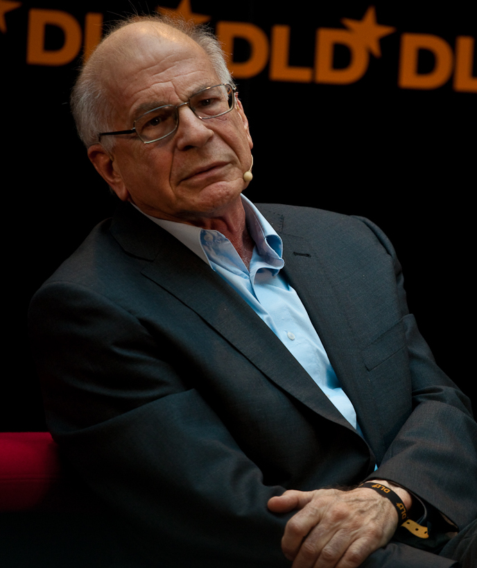
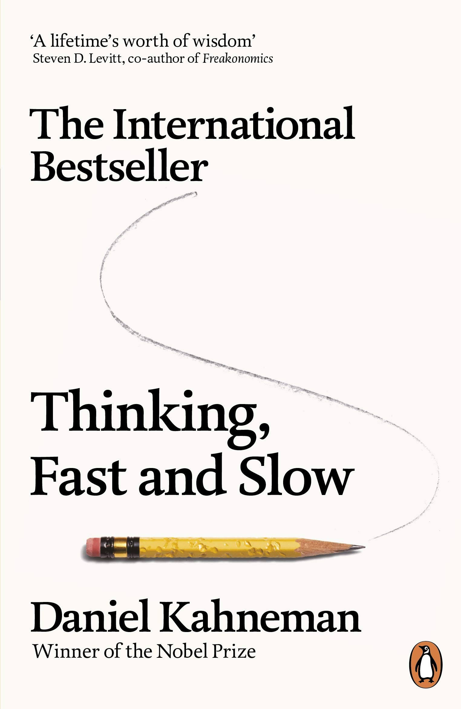

4 Data acquisition
There are several ways to get data which allows you to (hopefully) identify a cause-and-effect relationship:
4.1 Interviews
An interview is normally a one-on-one verbal conversation. Interviews are conducted to learn about the participants’ experiences, perceptions, opinions, or motivations. The relationship between the interviewer and interviewee must be taken into account and other circumstances (place, time, face to face, email, etc.) should be taken into account. There are three types of interviews structured, semi-structured, and unstructured. Structured interviews use a set list of questions and hence are like a verbal surveys. In unstructured interviews the interviewer doesn’t use predetermined questions but only a list of topics to address. Semi-structured interviews are the middle ground. Semi-structured interviews require the interviewer to have a list of questions and topics pre-prepared, which can be asked in different ways with different interviewee/s. Semi-structured interviews increase the flexibility and the responsiveness of the interview while keeping the interview on track, increasing the reliability and credibility of the data. Semi-structured interviews are one of the most common interview techniques.
Structured interviews use a predetermined list of questions that must be asked in a specific order, improving the validity and trustworthiness of the data but lowering respondent response. Structured interviews resemble verbal questionnaires. In unstructured interviews, the interviewer has a planned list of subjects to cover but no predetermined interview questions. In exchange for less reliable data, this makes the interview more adaptable. Long-term field observation studies may employ unstructured interviews. The middle ground are interviews that are semi-structured. In semi-structured interviews, the interviewer must prepare a list of questions and themes that can be brought up in various ways with various interviewees.
Interviews allow you to address a cause-and-effect relationship fairly directly, and it can be a good idea to interview experts and ask some why and how questions to gather initial knowledge about a particular topic before further elaborating your research strategy. For example, I interviewed kindergarten teachers with many years of experience working with children, as well as other parents, to get information on how to solve the problem of my children throwing plates around the dining room. However, findings based on interviews are not very valid or reliable because the personal perceptions of both the interviewer and the interviewee can have an impact on the conclusions drawn. For example, I received very different tips and explanations because of the personal experiences of the people I interviewed. Unfortunately, I could not really ask my son why he was misbehaving. His vocabulary was too limited at the time, and even if he could speak, he would probably refuse to tell me the truth.
4.2 Surveys
In contrast to an interview a survey can be sent out to many different people. Surveys can be used to identify a cause-and-effect relationship by asking questions about both the cause and the effect and examining the responses. For example, if a researcher wanted to determine whether there is a relationship between a person’s level of education and their income, they could conduct a survey asking participants about their education level and their income. If the data shows that participants with higher levels of education tend to have higher incomes, it suggests that education may be a cause of higher income. However, it is important to note that surveys can only establish a correlation between variables, but it is difficult to claim that correlations that where found through the survey imply a causal relationship. To establish a causal relationship, a researcher would need to use other methods, such as an experiment, to control for other potential factors that might influence the relationship that the respondent does not see.
4.3 Case studies
Case studies involve in-depth examination of a single case or a small number of cases in order to understand a particular phenomenon. Case studies can be conducted using both quantitative and qualitative methods, depending on the research question and the data being analyzed. While it is reasonable to find causal effects in the particular case, it is problematic to generalize the causal relationship. To establish a general causal relationship, a researcher would need to use other methods, such as an experiment, to control for other potential factors that might influence the relationship that the respondent does not see.
4.4 Experiments
One way to clearly identify a cause-and-effect relationship is through experiments, which involve manipulating the cause (the independent variable) and measuring the effect (the dependent variable) under controlled conditions (we will later on define precisely what is meant here). Experiments can be conducted using both quantitative and qualitative methods. Here are some examples:
- A medical study in which a new drug is tested on a group of patients, while a control group receives a placebo.
- An educational study in which a group of students is taught a new method of learning, while a control group is taught using the traditional method.
- An agricultural study in which a group of crops is treated with a new fertilization method, while a control group is not treated.
- A study to determine the effect of a new training program on employee productivity might involve randomly assigning employees to either a control group that does not receive the training, or an experimental group that does receive the training. By comparing the productivity of the two groups, the researchers can determine if the new training program had a causal effect on employee productivity.
- A study to determine the effect of a new advertising campaign on sales might involve randomly assigning different groups of customers to be exposed to different versions of the campaign. By comparing the sales of the different groups, the researchers can determine if the advertising campaign had a causal effect on sales.
- In experimental economics, experimental methods are used to study economic questions. In a lab-like environment data are collected to investigate the size of certain effects, to test the validity of economic theories, to illuminate market mechanisms, or to examine the decision making of people. Economic experiments usually motivates and rewards subjects with money. The overall goal is to mimic real-world incentives and investigate things that cannot be captured or identified in the field.
- In behavioral economics, laboratory experiments are also used to study decisions of individuals or institutions and to test economic theory. However, it is done with a focus on cognitive, psychological, emotional, cultural, and social factors.
1 Source: https://commons.wikimedia.org/wiki/File:Daniel_Kahneman_(3283955327)_(cropped).jpg


In 2002 the Nobel Prize of Economics was awarded to Vernon L. Smith, I quote The Sveriges Riksbank Prize in Economic Sciences in Memory of Alfred Nobel (2002), “for having established laboratory experiments as a tool in empirical economic analysis, especially in the study of alternative market mechanisms” and Daniel Kahneman “for having integrated insights from psychological research into economic science, especially concerning human judgment and decision-making under uncertainty”.
The strength of evidence from a controlled experiment is generally considered to be strong. However, the external validity, i.e., the generalizability, should be considered as well. External validity is sometimes low because effects that you can identify and measure in a lab are sometimes only of minor importance in the field.
There are different types of experiments:
Randomized controlled trials (RCTs) are a specific type of an experiment that involve randomly assigning participants to different treatment groups and comparing the outcomes of those groups. RCTs are often considered the gold standard of experimental research because they provide a high degree of control over extraneous variables and are less prone to bias.
For a better explanation and some great insights into what an RCT actually is, please watch the video produced by UNICEFInnocenti and published on the YouTube channel of UNICEF’s dedicated research center, see https://youtu.be/Wy7qpJeozec and Figure 4.2.
2 Source: https://youtu.be/Wy7qpJeozec

Quasi-experiments involve the manipulation of an independent variable, but do not involve random assignment of participants to treatment groups. Quasi-experiments are less controlled than RCTs, but can still provide valuable insights into cause-and-effect relationships.
Natural experiments involve the observation of naturally occurring events or situations that provide an opportunity to study cause-and-effect relationships. Natural experiments are often used when it is not possible or ethical to manipulate variables experimentally.
In a laboratory experiment, researchers manipulate an independent variable and measure the effect on a dependent variable in a controlled laboratory setting. This allows for greater control over extraneous variables, but the results may not generalize to real-world situations.
In a field experiment, researchers manipulate an independent variable and measure the effect on a dependent variable in a natural setting, rather than in a laboratory. This allows researchers to study real-world phenomena, but it can be more difficult to control for extraneous variables.
Chapter 8 will elaborate more on experiments that take place outside of a lab.
4.5 Observational data
3 Source: https://pixabay.com/images/id-5029286/
Observational data are data that had been observed before the research question was asked or being collected independently from the study. To understand how observational data can be used to constitute a causal relationship is a bit tricky because there is only one world and only one reality at a time. In other words, we usually miss a counterfactual which we can use for a comparison. Take, for example, the past COVID-19 pandemic, where you chose to be vaccinated or not. Regardless of what you chose, we will never find out what would have happened to you if you had chosen differently. Maybe you would have died, maybe you would have gotten more or less sick, or maybe you wouldn’t have gotten sick at all. We don’t know, and it’s impossible to find out because it’s impossible to observe the counterfactual outcomes. This makes it difficult to establish causality from observational data. However, ingenious minds have found reasonable procedures and methods to extract some level of knowledge from observational data that allows us to infer causal relationships from observational data where we cannot directly observe the counterfactual outcome. We will come back to these methods later on.
In the upcoming sections, however, we will discuss experimental research designs including randomized controlled trials (RCTs) which are considered to be the “gold standard for measuring the effect of an action” (Taddy, 2019, p. 128). RCTs can be used, for example, to study the effectiveness of drugs by observing people randomly assigned to three groups, one taking the pill (or treatment), a second receiving a placebo, and a third taking nothing. If the first group responds in any way differently than the other groups, the drug has an effect. Before explaining an RCT in more detail, we need to be clear about the fundamental problem of causal inference. This will be discussed in the following.
4.6 Sampling
4.6.1 The Hite Report
In 1976, when the The Hite Report (see Hite, 1976) was published it instantly became a best seller. Hite used an individualistic research method. Thousands of responses from anonymous questionnaires were used as a framework to develop a discourse on human responses to gender and sexuality. The following comic concludes the main results.

4 Picture is taken from https://www.theparisreview.org/blog/2017/07/21/great-moments-literacy-hite-report.

The picture of womens’ sexuality in Hite (1976) was probably a bit biased as the sample can hardly be considered to be a random and unbiased one:
- Less than 5% of all questionnaires which were sent out were filled out and returned (response bias).
- The questions were only sent out to women’s organizations (an opportunity sample).
Thus, the results were based on a sample of women who were highly motivated to answer survey’s questions, for whatever reason.
4.6.2 Sample design
In statistics and quantitative research methodology, a sample is a group of individuals or objects that are collected or selected from a statistical population using a defined procedure. The elements of a sample are called sample points, sampling units, or observations.
Usually, the population is very large, and therefore, conducting a census or complete enumeration of all individuals in the population is either impractical or impossible. Therefore, a sample is taken to represent a manageable subset of the population. Data is collected from the sample, and statistics are calculated to make inferences or extrapolations from the sample to the population.
In statistics, we often rely on a sample, that is, a small subset of a larger set of data, to draw inferences about the larger set. The larger set is known as the population from which the sample is drawn.
Researchers adopt a variety of sampling strategies. The most straightforward is simple random sampling. Such sampling requires every member of the population to have an equal chance of being selected into the sample. In addition, the selection of one member must be independent of the selection of every other member. That is, picking one member from the population must not increase or decrease the probability of picking any other member (relative to the others). In this sense, we can say that simple random sampling chooses a sample by pure chance. To check your understanding of simple random sampling, consider the following example. What is the population? What is the sample? Was the sample picked by simple random sampling? Is it biased?
4.6.2.1 Random sampling
Random sampling is a sampling procedure by which each member of a population has an equal chance of being included in the sample. Random sampling ensures a representative sample. There are several types of random sampling. In simple random sampling, not only each item in the population but each sample has an equal probability of being picked. In systematic sampling, items are selected from the population at uniform intervals of time, order, or space (as in picking every one-hundredth name from a telephone directory). Systematic sampling can be biased easily, such as, for example, when the amount of household garbage is measured on Mondays (which includes the weekend garbage). In stratified and cluster sampling, the population is divided into strata (such as age groups) and clusters (such as blocks of a city) and then a proportionate number of elements is picked at random from each stratum and cluster. Stratified sampling is used when the variations within each stratum are small in relation to the variations between strata. Cluster sampling is used when the opposite is the case. In what follows, we assume simple random sampling. Sampling can be from a finite population (as in picking cards from a deck without replacement) or from an infinite population (as in picking parts produced by a continuous process or cards from a deck with replacement).
In statistics, a simple random sample is a subset of individuals (a sample) chosen from a larger set (a population). Each individual is chosen randomly and entirely by chance, such that each individual has the same probability of being chosen at any stage during the sampling process, and each subset of k individuals has the same probability of being chosen for the sample as any other subset of k individuals.
The simple random sample has two important properties:
- UNBIASED: Each unit has the same chance of being chosen.
- INDEPENDENCE: Selection of one unit has no influence on the selection of other units.
4.6.2.2 Other sampling methods
Systematic sampling
Systematic sampling (a.k.a. interval sampling) relies on arranging the study population according to some ordering scheme and then selecting elements at regular intervals through that ordered list. Systematic sampling involves a random start and then proceeds with the selection of every k\(^{th}\) element from then onwards.
Accidental sampling / opportunity sampling / convenience sampling
These sampling methods describe a type of nonprobability sampling which involves the sample being drawn from that part of the population which is close to hand. That is, a population is selected because it is readily available and convenient.
Stratified sampling
Since simple random sampling often does not ensure a representative sample, a sampling method called stratified random sampling is sometimes used to make the sample more representative of the population. This method can be used if the population has a number of distinct groups. In stratified sampling, you first identify members of your sample who belong to each group. Then you randomly sample from each of those subgroups in such a way that the sizes of the subgroups in the sample are proportional to their sizes in the population. Let`s take an example: Suppose you were interested in views of capital punishment at an urban university. You have the time and resources to interview 200 students. The student body is diverse with respect to age; many older people work during the day and enroll in night courses (average age is 39), while younger students generally enroll in day classes (average age of 19). It is possible that night students have different views about capital punishment than day students. If 70% of the students were day students, it makes sense to ensure that 70% of the sample consisted of day students. Thus, your sample of 200 students would consist of 140 day students and 60 night students. The proportion of day students in the sample and in the population (the entire university) would be the same. Inferences to the entire population of students at the university would therefore be more secure.
Cluster sampling
Sometimes it is more cost-effective to select respondents in groups (clusters) of similar respondents. Sampling is often clustered by geography, or by time periods.
4.6.2.3 Random assignment
In experimental research, populations are often hypothetical. For example, in an experiment comparing the effectiveness of a new anti-depressant drug with a placebo, there is no actual population of individuals taking the drug. In this case, a specified population of people with some degree of depression is defined and a random sample is taken from this population. The sample is then randomly divided into two groups; one group is assigned to the treatment condition (drug) and the other group is assigned to the control condition (placebo). This random division of the sample into two groups is called random assignment. Random assignment is critical for the validity of an experiment. For example, consider the bias that could be introduced if the first 20 subjects to show up at the experiment were assigned to the experimental group and the second 20 subjects were assigned to the control group. It is possible that subjects who show up late tend to be more depressed than those who show up early, thus making the experimental group less depressed than the control group even before the treatment was administered. In experimental research of this kind, failure to assign subjects randomly to groups is generally more serious than having a non-random sample. Failure to randomize (the former error) invalidates the experimental findings. A non-random sample (the latter error) simply restricts the generalizability of the results.
4.6.3 Sample size
The sample size is an important feature of any empirical study in which the goal is to make inferences about a population from a sample. In practice, the sample size used in a study is usually determined based on the cost, time, or convenience of collecting the data, and the need for it to offer sufficient statistical power.
Recall that the definition of a random sample is a sample in which every member of the population has an equal chance of being selected. This means that the sampling procedure rather than the results of the procedure define what it means for a sample to be random. Random samples, especially if the sample size is small, are not necessarily representative of the entire population.
Larger sample sizes generally lead to increased precision when estimating unknown parameters. For example, if we wish to know the proportion of a certain species of fish that is infected with a pathogen, we would generally have a more precise estimate of this proportion if we sampled and examined 200 rather than 100 fish. Several fundamental facts of mathematical statistics describe this phenomenon, including the law of large numbers and the central limit theorem.
The quality of data matters
A helpful slogan to keep in mind while scrutinizing statistical results is garbage in, garbage out. Regardless of how scientifically sound and visually appealing a statistic may appear, the formula used to derive it is oblivious to the quality of the data that underpins it. It is your responsibility to conduct a thorough examination. For example, if the data on which the statistic is based emanates from a biased sample (one that favors certain individuals over others), a flawed design, unreliable data-collection protocols, or misleading questions, the margin of error becomes bad. If the bias is sufficiently severe, the outcomes become worthless.
4.6.4 Sample errors
Read the following examples5:
5 The examples are taken from Lane (2023) and can be accessed here.
Example 1: You have been hired by the National Election Commission to examine how the American people feel about the fairness of the voting procedures in the U.S. Who will you ask?
It is not practical to ask every single American how he or she feels about the fairness of the voting procedures. Instead, we query a relatively small number of Americans, and draw inferences about the entire country from their responses. The Americans actually queried constitute our sample of the larger population of all Americans. The mathematical procedures whereby we convert information about the sample into intelligent guesses about the population fall under the rubric of inferential statistics. A sample is typically a small subset of the population. In the case of voting attitudes, we would sample a few thousand Americans drawn from the hundreds of millions that make up the country. In choosing a sample, it is therefore crucial that it not over-represent one kind of citizen at the expense of others. For example, something would be wrong with our sample if it happened to be made up entirely of Florida residents. If the sample held only Floridians, it could not be used to infer the attitudes of other Americans. The same problem would arise if the sample were comprised only of Republicans.
Inferential statistics is based on the assumption that sampling is random. We trust a random sample to represent different segments of society in close to the appropriate proportions (provided the sample is large enough; see below).
Example 2: We are interested in examining how many math classes have been taken on average by current graduating seniors at American colleges and universities during their four years in school. Whereas our population in the last example included all US citizens, now it involves just the graduating seniors throughout the country. This is still a large set since there are thousands of colleges and universities, each enrolling many students. It would be prohibitively costly to examine the transcript of every college senior. We therefore take a sample of college seniors and then make inferences to the ntire population based on what we find. To make the sample, we might first choose some public and private colleges and universities across the United States. Then we might sample 50 students from each of these institutions. Suppose that the average number of math classes taken by the people in our sample were 3.2. Then we might speculate that 3.2 approximates the number we would find if we had the resources to examine every senior in the entire population. But we must be careful about the possibility that our sample is non-representative of the population. Perhaps we chose an overabundance of math majors, or chose too many technical institutions that have heavy math requirements. Such bad sampling makes our sample unrepresentative of the population of all seniors. To solidify your understanding of sampling bias, consider the following example. Try to identify the population and the sample, and then reflect on whether the sample is likely to yield the information desired.
Example 3: A substitute teacher wants to know how students in the class did on their last test. The teacher asks the 10 students sitting in the front row to state their latest test score. He concludes from their report that the class did extremely well. What is the sample? What is the population? Can you identify any problems with choosing the sample in the way that the teacher did?
In Example 3, the population consists of all students in the class. The sample is made up of just the 10 students sitting in the front row. The sample is not likely to be representative of the population. Those who sit in the front row tend to be more interested in the class and tend to perform higher on tests. Hence, the sample may perform at a higher level than the population.
Example 4: A coach is interested in how many cartwheels the average college freshmen at his university can do. Eight volunteers from the freshman class step forward. After observing their performance, the coach concludes that college freshmen can do an average of 16 cartwheels in a row without stopping.
In Example 4, the population is the class of all freshmen at the coach’s university. The sample is composed of the 8 volunteers. The sample is poorly chosen because volunteers are more likely to be able to do cartwheels than the average freshman; people who can’t do cartwheels probably did not volunteer! In the example, we are also not told of the gender of the volunteers. Were they all women, for example? That might affect the outcome, contributing to the non-representative nature of the sample.
Example 5: Sometimes it is not feasible to build a sample using simple random sampling. To see the problem, consider the fact that both Dallas and Houston are competing to be hosts of the 2012 Olympics. Imagine that you are hired to assess whether most Texans prefer Houston to Dallas as the host, or the reverse. Given the impracticality of obtaining the opinion of every single Texan, you must construct a sample of the Texas population. But now notice how difficult it would be to proceed by simple random sampling. For example, how will you contact those individuals who don’t vote and don’t have a phone? Even among people you find in the telephone book, how can you identify those who have just relocated to California (and had no reason to inform you of their move)? What do you do about the fact that since the beginning of the study, an additional 4,212 people took up residence in the state of Texas? As you can see, it is sometimes very difficult to develop a truly random procedure.